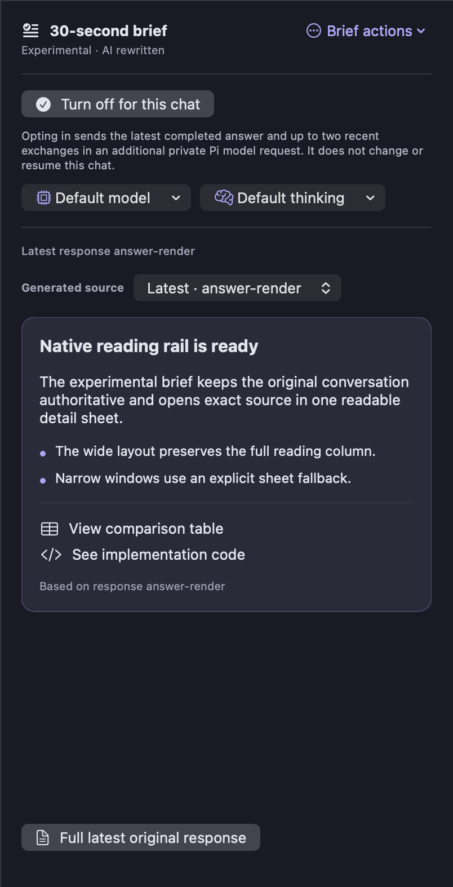
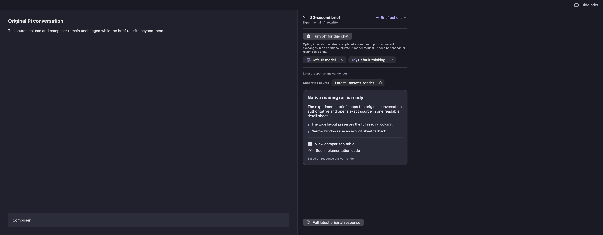
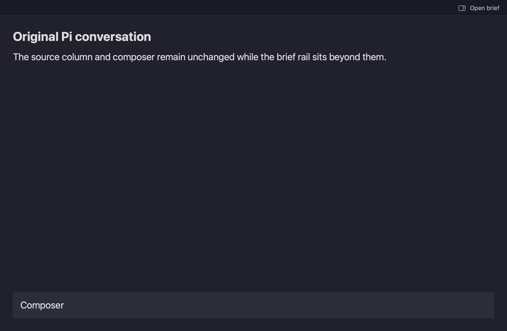

The feature, at a glance
Select the rail, wide layout, or narrow fallback to open its full-resolution image.
{kind=link}

The brief stays beside the conversation.
Show brief → choose model and thinking → opt in. The generated card stays compact, and its links open verbatim source details.
Open full-resolution crop ↗{kind=link}

Reading room, preserved
The full conversation column remains available while the brief rail sits alongside it.
Open original ↗{kind=link}

A clear way back in
At a narrow width and large text size, the rail becomes an explicit “Open brief” action instead of crowding the reading area.
Open original ↗About these renders
These images show actual SwiftUI feature components from the passing Mac test target. They are not a live Pi run, an installed-app capture, or a full-window capture. The wide render’s left chat and composer are a fixture placeholder.
What is—and is not—shown
The rail close-up is a pixel crop of the wide native render; its interface was not redrawn. No separate detail-sheet screenshot exists, so this gallery does not present one.
The test fixtures use entirely synthetic content. At capture time, the app and server rollout had not been performed.